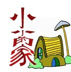
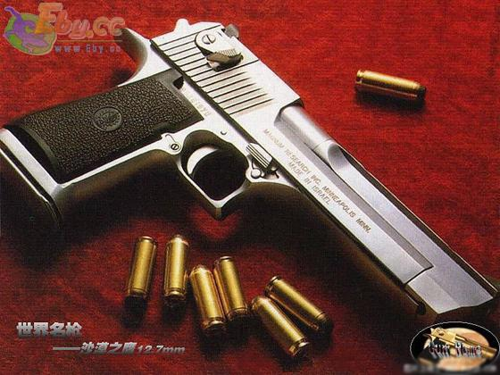
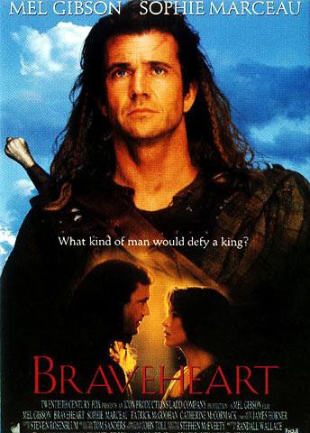

首页 / 我的相册
三张照片，三个让我停下来的瞬间。点任意一张可以放大，放大后支持左右方向键翻页、Esc 关闭。


小提示：图片放在 images/ 目录里，页面里用相对路径引用（例如 images/mao.jpg）。 这样整个文件夹打包上传后，图片不会「集体失踪」。
images/
images/mao.jpg
照片的好处是：它不解释，只把当时的温度留在那里。翻到这一页，就想起来拍照那天下午有点困。 —— 写在相册边上
用 CSS Grid 分成三列，每张照片统一用 aspect-ratio 裁成 4:3， 悬停时轻微放大；点开后用一小段 JavaScript 把原图放进灯箱。 如果没有 JavaScript，照片也照样能看，只是不能放大。
aspect-ratio